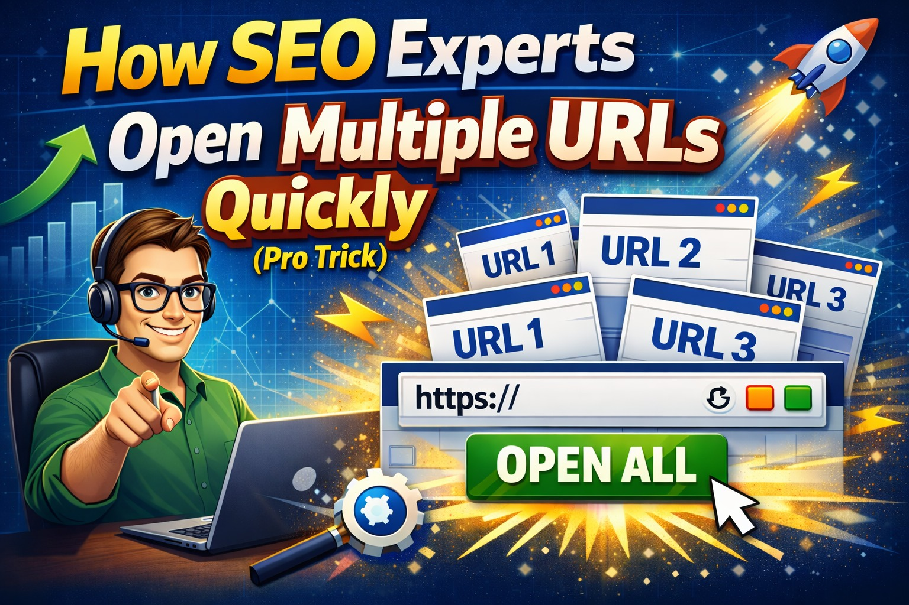

At first, opening links one by one seems like a minor chore. However, when you're managing a multitude of URLs daily, it swiftly transforms into a significant time sink.
That's precisely why SEO specialists steer clear of manual work. Instead, they use a straightforward yet highly effective method to open multiple URLs at once. In this guide, you'll learn that exact trick and how to use it in your daily workflow.
Why Opening Multiple URLs Manually is a Bad Idea
Let's face it — manually opening links isn’t just slow; it also disrupts your workflow.
- You lose your train of thought while switching between tabs
- Opening large lists of URLs takes a lot of time
- Repetitive clicking becomes frustrating
- Your overall productivity drops
For SEO professionals working with large datasets, this method simply doesn’t scale.
The Pro Trick SEO Experts Use
SEO experts solve this problem by using a Bulk URL Opener.
This simple tool allows you to paste multiple links and open them all at once in separate tabs. It removes repetitive work and significantly improves efficiency.
You can try using a free Bulk URL Opener tool to open multiple links instantly and save time.
How to Open Multiple URLs at Once
Follow these simple steps:
- Copy all the URLs you want to open
- Paste them into a Bulk URL Opener tool
- Click the “Open URLs” button
- All links will open instantly in new tabs
This is the easiest way to open multiple URLs at once without wasting time.
Real Use Cases in SEO
Backlink Analysis
SEO experts often review multiple referring pages to check link placement and quality. Opening all links together speeds up the process.
Competitor Research
When analyzing competitors, you may need to review several pages. Bulk opening allows quick comparison.
Technical SEO Audits
Auditing multiple URLs becomes easier when all pages are accessible at once.
Content Review
Opening multiple articles together helps analyze structure, keywords, and content quality more efficiently.
Benefits of Using a Bulk URL Opener
- Saves time on repetitive tasks
- Improves overall productivity
- Reduces manual effort
- Helps manage large URL lists easily
- Keeps your workflow smooth and efficient
Best Practices for Better Performance
- Avoid opening too many URLs at once (20–30 is ideal)
- Use a modern browser like Chrome or Edge
- Close unnecessary tabs to prevent slowdown
- Organize your URL list before opening
Try Bulk URL Opener with your own list
Free, runs in your browser and opens valid links with one click.
Is It Safe to Use a Bulk URL Opener?
Yes, using a Bulk URL Opener tool is safe as long as you use a reliable tool. Most tools do not require login or personal information, making them secure for everyday use.
Conclusion
Opening multiple URLs manually is time-consuming and inefficient, especially when you're working with large sets of links daily.
By using a Bulk URL Opener, you can simplify your workflow, save time, and stay focused on more important SEO tasks. It’s a simple trick, but it can make a big difference in your productivity.
Frequently Asked Questions
How do I open tabs in bulk at once?
You can use a Bulk URL Opener tool to paste and open multiple links with a single click.
Is there a limit to how many URLs I can open?
There is no strict limit, but opening too many tabs at once may slow down your browser. We recommend batches of 20 to 30 tabs.
Can I use this method on mobile?
Yes, but it works best on desktop browsers for smoother multi-tab performance.